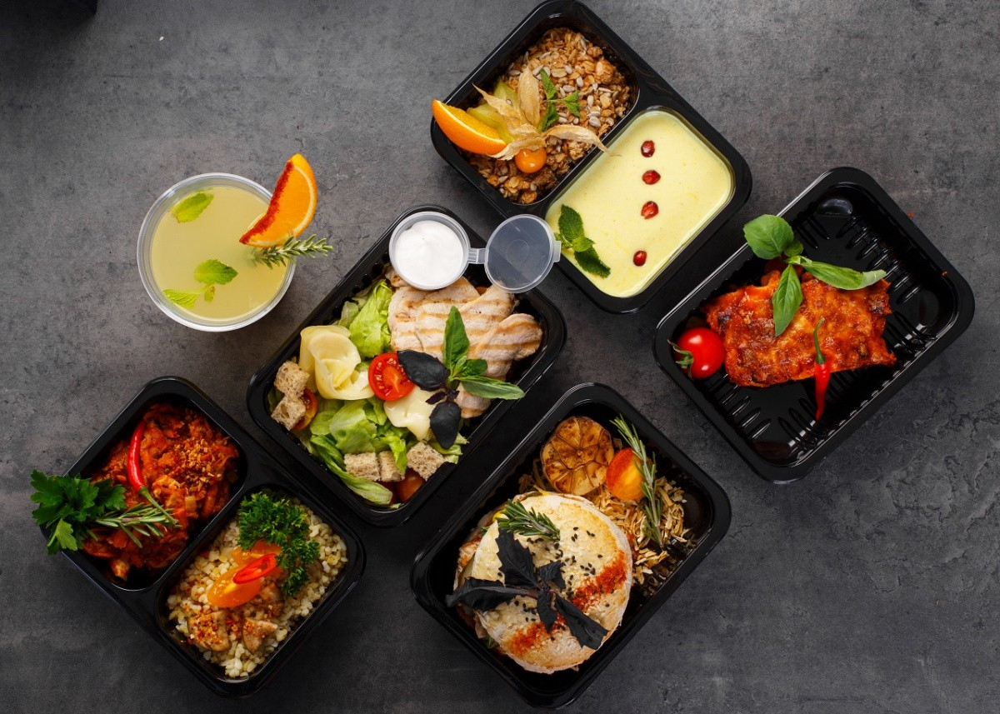
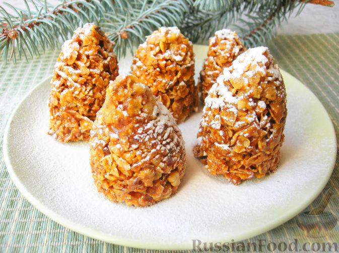
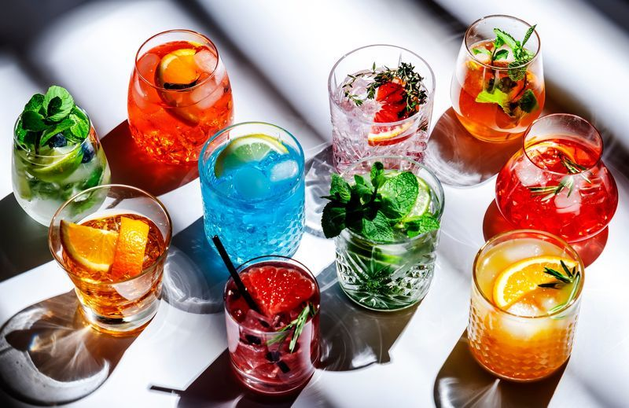

Завтраки подаём с 8:00 до 12:00, готовим каждую порцию с нуля. В меню: яичница с фермерскими яйцами и зеленью, авокадо-тосты на заквасочном хлебе, овсяная каша с сезонными ягодами и французские омлеты с начинкой на выбор. По субботам и воскресеньям — расширенный бранч с живой музыкой с 11:00.
Обеды и горячее

Обеденное меню меняется каждый сезон. Сейчас в карте: крем-суп из тыквы, паста с лесными грибами и трюфельным маслом, запечённый лосось с овощами на гриле и домашние котлеты с картофельным пюре. Каждый день шеф готовит блюдо дня — порция ограничена.
Десерты и выпечка

Каждое утро кондитер готовит свежую партию: шоколадный тарт с малиной, нью-йоркский чизкейк, медовик по бабушкиному рецепту, круассаны с миндальным кремом и сезонные пироги. Все десерты — без ароматизаторов и консервантов. По заказу готовим торты на праздник.
Напитки

Кофейная карта: эспрессо, капучино, флэт уайт, фильтр-кофе и сезонные авторские напитки. Зерно обжаривается локально раз в неделю. Также: чай из местных трав, свежевыжатые соки, домашние лимонады и горячий шоколад. Летом — холодный brew-кофе, матча-лате и смузи.
Прайс-лист
Цены на основные позиции меню (леи)
Категория
Блюдо / напиток
Вес / объём
Цена (MDL)
Завтраки
Авокадо-тост с яйцом
250 г
89
Французский омлет
180 г
72
Овсяная каша с ягодами
300 г
55
Обеды
Крем-суп из тыквы
350 мл
65
Паста с грибами
280 г
115
Лосось на гриле
200 г
145
Десерты
Шоколадный тарт
120 г
68
Чизкейк нью-йоркский
150 г
75
Круассан с миндалём
90 г
42
Напитки
Эспрессо
30 мл
28
Капучино
200 мл
45
Домашний лимонад
400 мл
52
Горячий шоколад
250 мл
58
* Цены актуальны на 2026 год. Блюдо дня — по запросу у официанта.
Как мы готовим
Короткое видео о нашей кухне и атмосфере.
* Демонстрационное видео. Авторские права принадлежат правообладателям.